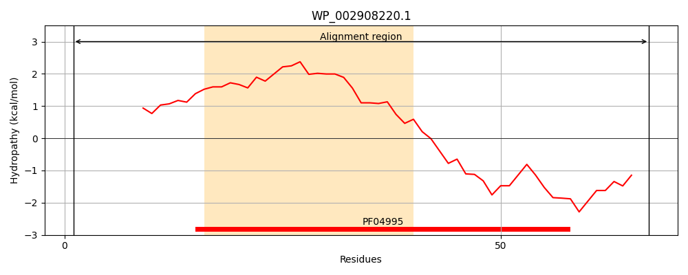
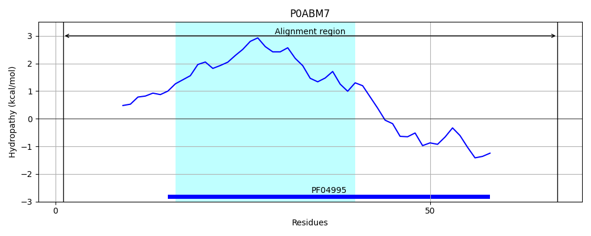
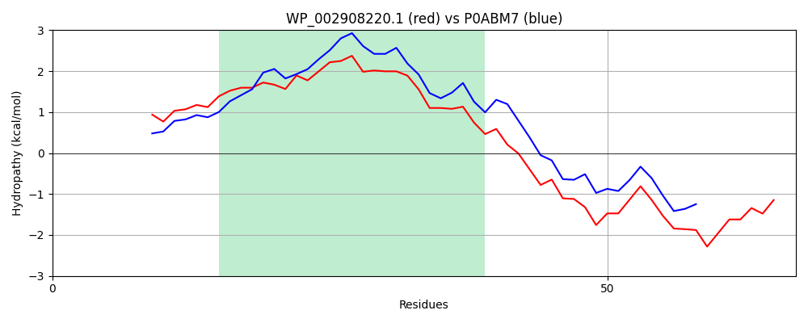

Hit Accession: P0ABM7
Hit TCID: 3.A.1.107.3
Hit Description: gnl|BL_ORD_ID|8718 gnl|TC-DB|P0ABM7|3.A.1.107.3 Heme exporter protein D - Escherichia coli O157:H7.
Mach Len: 67
e:0.000000
Query TMS Count : 1
Hit TMS Count: 1
TMS-Overlap Score: 1.250000
Predicted Substrates:CHEBI:5651;ferroheme b
BLAST Alignment:
| Protein Hydropathy Plots: | |
|---|---|
|  |  |
Pairwise Alignment-Hydropathy Plot: | |
|  | |